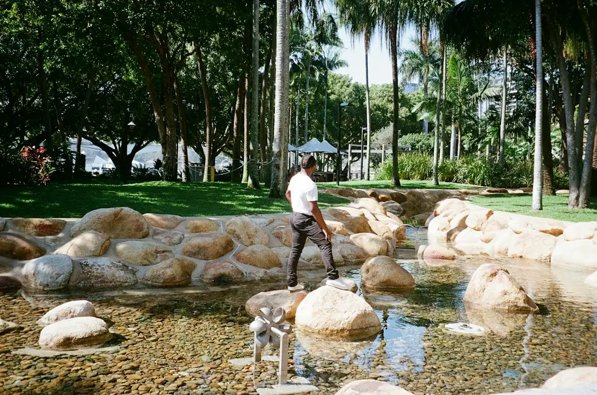

For a Brisbane concrete pool project, size and depth, rock or reactive clay, machine access, retaining, drainage, interior finish, heating and paving can shape the quote. Compare a poured design with a precast shell, then settle who handles approval, inspections and fencing sign off. Summer storms may delay excavation, spraying and curing, so request a written scope that records the block, access, inclusions and allowance for ground conditions.
When comparing pool design brisbane options, Brisbane homeowners need to weigh the backyard, intended use, approval path and construction method before excavation begins.
Pool Design Brisbane Explained
The Concrete Pools Brisbane material presents concrete pools as built around a backyard's shape, depth and size rather than a factory mould. That flexibility can suit a sloping site, narrow block or compact courtyard, but the position and access need attention before the design is fixed.
Walk the likely pool area and note the slope, visible rock, side access, trees, sewer lines and distance from the house and boundaries. A narrow path may limit excavation equipment. A sloping position may require retaining or drainage. These observations do not replace a site assessment, but they give a builder useful information before pricing.
Kenmore, Brookfield and Chapel Hill are identified as hilly western suburbs where slopes and rock can affect excavation. Older Brisbane blocks may also contain reactive clay, which swells after summer storms and shrinks during dry spells. Ask how those conditions affect engineering, excavation and the proposed pool position.
Choose the construction route
A custom poured pool is built in place, so its shape and size can follow the backyard. A precast concrete pool uses a factory made shell craned into position and may have a shorter on site build than a poured pool. A plunge pool can suit a smaller yard, while a pool and spa combination introduces decisions about layout, heating and running costs.
Resurfacing is a different route for an existing concrete pool. Before choosing a new excavation, establish whether crack repair, resurfacing and a new interior finish address the current structure. For a new pool, the intended use should guide depth, proportions, circulation space and the relationship with paving or landscaping.
Concrete and fibreglass also create different design questions. Compare shape freedom, delivery or machinery access, long term upkeep and future interior treatment against the actual block. A catalogue shape may look suitable until access, slope or surrounding ground levels are considered.
Build a quote that reflects the site
Size and depth are only part of the estimate. Rock or clay, machine access, retaining, interior finish, heating and surrounding paving can all alter the work required. Give each builder the same dimensions, access notes and known constraints so the quotes can be compared on equivalent assumptions.
- Record whether excavation changes if rock or difficult clay is found.
- Separate engineering, retaining and drainage from general excavation.
- Identify the interior finish, heating, coping, paving and landscaping included.
- Describe equipment access, deliveries and spoil removal through the property.
A smaller pool is not automatically a simpler project if the yard is steep, rocky or difficult to reach. The written scope should show what is included, what is allowed for and what remains unresolved. That distinction is more useful than comparing headline totals without the site assumptions.
For example, a sloping western Brisbane block may need excavation planning, retaining and drainage before the pool itself is priced. A compact courtyard may avoid some excavation volume but make equipment access, shell delivery or spoil removal more important. Ask for these site assumptions in writing, along with the proposed interior finish, surrounding works and any warranty terms stated in the proposal.
Allow for approval and weather
Responsibility for the approval process should be recorded before work begins. The builder should state who lodges the application, books inspections and arranges fencing sign off. Brisbane City Council and the Queensland Building and Construction Commission are identified as sources of current pool guidance. Sloping or flood affected lots may need additional checks, so raise those conditions early.
The expected sequence runs from design and approval through excavation, steel, spraying, curing and finishing. Confirm the pool position and access before excavation, then clarify the excavation and steel assumptions before spraying. Near completion, review the interior surface, coping, fencing and surrounding ground levels against the agreed scope.
Summer storms can flood an open excavation, soften clay sides and delay spraying or curing. If the project runs through wetter months, ask how weather interruptions affect the programme and what allowance has been made for changing ground conditions.
Who this guide applies to
This guide is for Brisbane homeowners considering a new poured pool, precast shell, plunge pool, pool and spa combination, raised design or resurfacing project. It is particularly relevant where the yard has a slope, visible rock, reactive clay, narrow access or limited room around the house.
Before making an enquiry, prepare the suburb, property area, rough pool idea, access details and known constraints. Plans are not needed for an initial enquiry. For a related construction perspective, read the Brisbane concrete pool builders guide.
- Describe the block. Record slope, visible rock, access width, trees, sewer lines, boundaries and the likely pool position.
- Select a route. Compare poured, precast, plunge, pool and spa, raised and resurfacing options against the backyard and intended use.
- Prepare one brief. Give each builder the same dimensions, access notes, ground concerns and requested inclusions.
- Confirm responsibility. Get written confirmation of who handles approvals, inspections and fencing sign off before work begins.
| Decision area | Poured concrete | Fibreglass shell |
|---|---|---|
| Shape and size | Built in place for a custom shape or size | Uses a manufactured shell with set form options |
| Site access | Depends on excavation access and on site construction | Requires suitable delivery and placement access |
| Ground conditions | Clarify how rock, clay, slopes, retaining and drainage are addressed | Clarify how delivery, placement and site preparation suit the block |
| Future upkeep | Confirm the interior finish and resurfacing expectations | Ask about long term upkeep and the specified shell finish |
Common questions
What changes the cost of a Brisbane concrete pool? The listed cost drivers are size and depth, rock or reactive clay, machine access, retaining, interior finish, heating and surrounding paving. Request a written breakdown showing which items are included and which remain allowances.
Can summer weather delay construction? Yes. Heavy rain can flood an open excavation, soften clay sides and delay spraying or curing. Ask how the programme allows for wet weather.
What should be confirmed about approval? Get the responsible party named for lodging the application, booking inspections and arranging fencing sign off. Check current Brisbane City Council and Queensland Building and Construction Commission guidance.
Is a precast shell always faster? Not necessarily. A precast pool may have a shorter on site build than a poured pool, but delivery access, preparation and the block still need checking.
This guide covers Brisbane concrete pool choices, site conditions, quote questions, approvals and construction timing.